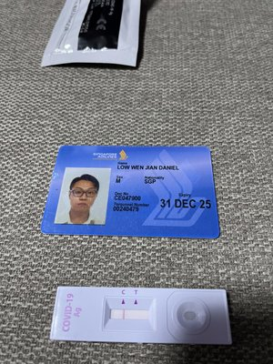

✈ Licensed B2 EngineerSenior Licensed Aircraft Maintenance Engineer — SIA Engineering Company
A licenced aerospace professional with over a decade of hands-on experience maintaining some of the world's most sophisticated widebody aircraft — the A380, B787, and A330. I combine deep avionics expertise with a passion for data analytics and a proven track record of leading teams, driving airworthiness compliance, and delivering complex cabin retrofit modifications. Driven, meticulous, and always ready for the next challenge.
Drag the slider to travel through my career year by year.
I'm open to new opportunities in aerospace maintenance, avionics engineering, and aviation analytics. Reach out and let's talk.